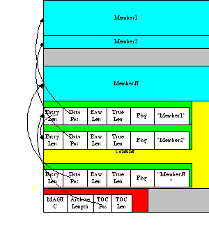

PyInstaller Manual
| Version: | PyInstaller 2.1.1dev-3607bf4 |
|---|---|
| Homepage: | http://www.pyinstaller.org |
| Contact: | pyinstaller@googlegroups.com |
| Authors: | David Cortesi
based on structure by Giovanni Bajo & William Caban based on Gordon McMillan's manual |
| Copyright: | This document has been placed in the public domain. |
Contents
- Requirements
- License
- How To Contribute
- Installing PyInstaller
- Overview: What PyInstaller Does and How It Does It
- Using PyInstaller
- Using Spec Files
- When Things Go Wrong
- Advanced Topics
- Outdated Features
Requirements
- Windows
- Windows XP or newer.
- PyWin32 Python extensions for Windows is needed for users of Python 2.6 and later.
- Mac OS X
- Mac OS X 10.4 (Tiger) or newer (Leopard, Snow Leopard, Lion, Mountain Lion).
- Linux
- ldd: Console application to print the shared libraries required by each program or shared library. This typically can by found in the distribution-package glibc or libc-bin.
- objdump: Console application to display information from object files. This typically can by found in the distribution-package binutils.
- Solaris
- ldd
- objdump
- AIX
- AIX 6.1 or newer. Python executables created using PyInstaller on AIX 6.1 should work on AIX 5.2/5.3.
- ldd
- objdump
- FreeBSD
- FreeBSD 9.2 or newer. Tested with FreeBSD 9.2 amd64, with included gcc (version 4.2.1)
- ldd
- objdump
License
PyInstaller is distributed under the GPL License but it has an exception such that you can use it to compile commercial products.
In a nutshell, the license is GPL for the source code with the exception that:
- You may use PyInstaller to compile commercial applications out of your source code.
- The resulting binaries generated by PyInstaller from your source code can be shipped with whatever license you want.
- You may modify PyInstaller for your own needs but changes to the PyInstaller source code fall under the terms of the GPL license. That is, if you distribute your modifications you must distribute them under GPL terms.
For updated information or clarification see our FAQ at the PyInstaller home page.
How To Contribute
PyInstaller is an open-source project that is created and maintained by volunteers. At Pyinstaller.org you find links to the mailing list, IRC channel, and Git repository, and the important How to Contribute link. Contributions to code and documentation are welcome, as well as tested hooks for installing other packages.
Installing PyInstaller
Beginning with version 2.1 PyInstaller is a Python package and is installed like other Python packages.
Installing Using pip
The recommended method for Windows, Linux, or Mac OS is to use one of the standard package installers such as pip (or the earlier easy_install). When you have installed one of these tools you can download and install PyInstaller in one command, for example:
pip install pyinstaller
and upgrade to a newer version in one command:
pip install --upgrade pyinstaller
Installing in Windows
For Windows, PyWin32 is a prerequisite. Follow that link and carefully read the instructions; there is a different version of PyWin32 for each version of Python. With this done you can continue to install pip using the MS-DOS command line.
However it is particularly easy to use pip-Win, which sets up both pip and virtualenv and makes it simple to install packages and to switch between different Python interpreters. (For more on the uses of virtualenv, see Supporting Multiple Platforms below.)
When pip-Win is working, enter this command in its Command field and click Run:
venv -c -i pyi-env-name
This creates a new virtual environment rooted at C:\Python\pyi-env-name and makes it the current environment. A new command shell window opens in which you can run commands within this environment. Enter the command
pip install PyInstaller
Whenever you want to use PyInstaller,
- Start pip-Win
- In the Command field enter venv pyi-env-name
- Click Run
Then you have a command shell window in which commands execute in that environment.
Installing from the archive
You can also install PyInstaller by downloading the compressed archive from PyPI and expanding the archive.
Inside the archive is a script named setup.py. Execute python setup.py install with administrator privilege to install or upgrade PyInstaller.
For platforms other than Windows, Linux and Mac OS, you must build a bootloader program for your platform before installing the Python package.
- cd into the distribution folder.
- cd bootloader.
- Make a bootloader with: python ./waf configure build install.
If this reports an error, read Building the Bootloader below, then ask for technical help. It is of no use to continue the installation without a bootloader. After the bootloader has been created, you can run python setup.py install with administrator privileges to complete the installation.
Verifying the installation
On all platforms, the command pyinstaller should now exist on the execution path. To verify this, enter the command
pyinstaller --version
The result should resemble 2.n for a released version, and 2.1dev-xxxxxx for a development branch.
If the command is not found, make sure the execution path includes the proper directory:
- Windows: C:\PythonXY\Scripts (where XY stands for the major and minor Python verysion number, for example C:\Python27\Scripts for Python 2.7)
- Linux: /usr/bin/
- OS X (using the default Apple-supplied Python) /usr/local/bin
- OS X (using Python installed by macports) /opt/local/bin
To display the current path in Windows the command is echo %path% and in other systems, echo $PATH.
Installed commands
The complete installation places these commands on the execution path:
- pyinstaller is the main command to build a bundled application. See Using PyInstaller.
- pyi-makespec is used to create a spec file. See Using Spec Files.
- pyi-build is used to execute a spec file that already exists. See Using Spec Files.
- pyi-archive_viewer is used to inspect a bundled application. See Inspecting Archives.
- pyi-bindepend is used to display dependencies of an executable. See Inspecting Executables.
- pyi-grab_version is used to extract a version resource from a Windows executable. See Capturing Version Data.
- pyi-make_comserver is used to build a Windows COM server. See Windows COM Server Support.
If you do not perform the complete installation (setup.py or installing via pip), these commands will not exist as commands. However you can still execute all the functions documented below by running Python scripts found in the distribution folder. The equivalent of the pyinstaller command is pyinstaller-folder /pyinstaller.py. The other commands are found in pyinstaller-folder /cliutils/ with obvious names (makespec.py, etc.)
Overview: What PyInstaller Does and How It Does It
This section covers the basic ideas of PyInstaller. These ideas apply to all platforms. There are many options, exceptions, and special cases covered under Using PyInstaller. PyInstaller reads a Python script written by you. First it analyzes your code to discover every other file your script needs in order to execute. Then it finds, copies, and collects all those other files -- including the active Python interpreter! -- and puts them with your script in a single folder, or optionally in a single executable file.
You distribute this folder or file to other people, and they can execute your program. As far as your users can tell, your app is self-contained; they do not need to install any support packages, or any particular version of Python. They do not need to have Python installed at all.
The output of PyInstaller is specific to the active operating system and the active version of Python. To prepare a distribution for a different OS, or for a dfferent version of Python, you run PyInstaller on that OS, under that version of Python.
Note
Don't assume that your 64-bit based Python will generate executables that work on 32-bit systems.
Analysis: Finding the Files Your Program Needs
What does your script need in order to run, besides a Python interpreter? To find out, PyInstaller looks at all the import statements in your script. It finds those Python modules and looks in them for import statements, and so on recursively, until it has a complete list of Python modules your script requires.
PyInstaller understands the "egg" distribution format often used for Python packages. If your script imports a module from an "egg" PyInstaller adds the egg and its dependencies to the set of needed files.
PyInstaller also knows about the GUI packages Qt (imported via PyQt or PySide), WxPython, TkInter, Django, and other major packages.
Some Python scripts import modules in ways that PyInstaller cannot detect: for example, by using the __import__() function with variable data, or manipulating the sys.path value at run time. If your script requires files that PyInstaller does not know about, you must help it:
- You can give additional files on the PyInstaller command line.
- You can give additional import paths on the command line.
- You can edit the myscript.spec file that PyInstaller writes the first time you run it for your script. In the spec file you can tell PyInstaller about code modules that are unique to your script.
- You can write "hook" files that inform PyInstaller of hidden imports. If you "hook" imports for a package that other users might also use, you can contribute your hook file to PyInstaller.
If your program depends on access to certain data files, you can tell PyInstaller to include them in the bundle as well. You do this by modifying the spec file, an advanced topic that is covered under Using Spec Files. In order to locate these files, your program needs to be able to learn its path at run time in a way that works regardless of whether or not it is running from a bundle. This is covered under Accessing Data Files.
Bundling to One Folder
When you apply PyInstaller to myscript.py the default result is a single folder named myscript. This folder contains all the necessary support files, and an executable file also named myscript (myscript.exe in Windows).
You compress the folder to myscript.zip and transmit it to your users. They install the program simply by unzipping it. A user runs your app by opening the folder and launching the myscript executable inside it.
A small advantage of one-folder mode is that it is easier to debug a failure in building the app. You can see exactly what files PyInstaller collected.
Another small advantage is that when you change your code, as long as it imports exactly the same set of support files, you could send out only the updated myscript executable. That is typically much smaller than the entire folder. (Of course, if you change the script so that it imports more or different support files, or if the support libraries are upgraded, you must redistribute the whole bundle.)
A small disadvantage of the one-folder format is that the one folder contains a large number of files. Your user must find the myscript executable in a long list of names or a big array of icons. Also your user can create a problem by accidentally dragging files out of the folder.
Bundling to One File
An option of PyInstaller is to produce a single executable named myscript (myscript.exe in Windows). All the support files needed to run your program are embedded in the one program file.
The advantage of this is that your users get something they understand, a single executable to launch. One disadvantage is that any related files such as README must be distributed separately. Another is that the single executable is a little slower to start up than the executable in one folder.
Note
Before bundling your project to one file, make sure it works fine when bundled to one folder. When Things Go Wrong it's much easier to find out what actually went wrong if you bundled to one folder.
How the One-Folder Program Works
A bundled program always starts execution in the PyInstaller bootloader. This is the heart of the myscript executable in the one folder, and of the one-file executable.
The PyInstaller bootloader is a binary executable program for the active platform (Windows, Linux, Mac OS X, etc.). When the user launches your program, it is the bootloader that runs. For a one-folder program, the bootloader creates a temporary Python environment such that the Python interpreter will find all imported modules and libraries in the myscript folder.
The bootloader starts a copy of the Python interpreter to execute your script. Everything follows normally from there, provided that all the necessary support files were included.
(This is an overview. For more detail, see The Bootstrap Process in Detail below.)
How the One-File Program Works
For a one-file program, the bootloader first creates a temporary folder in the appropriate temp-folder location for this OS. The folder is named _MEIxxxxxx, where xxxxxx is a random number.
The one file contains an embedded archive of all the Python modules used by your script, as well as compressed copies of any non-Python support files (e.g. .so files). The bootloader uncompresses the support files and writes copies into the the temporary folder. This can take a little time. That is why a one-file app is a little slower to start than a one-folder app.
After creating the temporary folder, the bootloader proceeds exactly as for the one-folder bundle, in the context of the temporary folder. When the bundled code terminates, it deletes the temporary folder.
(Note that in Linux and related systems, it is possible to mount the /tmp folder with a "no-execution" option. That option is not compatible with a PyInstaller one-file bundle. It needs to execute code out of /tmp.)
Because the program makes a temporary folder with a unique name, you can run multiple copies; they won't interfere with each other. However, running multiple copies is expensive in disk space because nothing is shared.
The _MEIxxxxxx folder is not removed if the program crashes or is killed (kill -9 on Unix, killed by the Task Manager on Windows, "Force Quit" on Mac OS). Thus if your app crashes frequently, your users will lose disk space to multiple _MEIxxxxxx temporary folders.
Do not give administrator privileges to a one-file executable (setuid root in Unix/Linux, "Run this program as an administrator" property in Windows 7). There is an unlikely but not impossible way in which a malicious attacker could corrupt one of the shared libraries in the temp folder while the bootloader is preparing it. Distribute a privileged program in one-folder mode instead.
Console or not?
By default the bootloader creates a command-line console (a terminal window in Linux and Mac OS, a command window in Windows). It gives this window to the Python interpreter for its standard input and output. Error messages from Python and print statements in your script will appear in the console window. If your script reads from standard input, the user can enter data in the window.
An option for Windows and Mac OS is to tell PyInstaller to not provide a console window. The bootloader starts Python with no target for standard output or input. Do this if your script has a graphical interface for user input and can properly report its own diagnostics.
Hiding the Source Code
The bundled app does not include any source code. However, PyInstaller bundles compiled Python scripts (.pyc files). These could in principle be decompiled to reveal the logic of your code.
If you want to hide your source code more thoroughly, one possible option is to compile some of your modules with Cython. Using Cython you can convert Python modules into C and compile the C to machine language. PyInstaller can follow import statements that refer to Cython C object modules and bundle them.
Additionally, Python bytecode can be obfuscated with AES256 by specifying an encryption key on PyInstaller's command line. Please note that it is still very easy to extract the key and get back the original bytecode, but it should prevent most forms of "occasional" tampering.
Using PyInstaller
The syntax of the pyinstaller command is:
pyinstaller [options] script [script ...] | specfile
In the most simple case, set the current directory to the location of your program myscript.py and execute:
pyinstaller myscript.py
PyInstaller analyzes myscript.py and:
- Writes myscript.spec in the same folder as the script.
- Creates a folder build in the same folder as the script if it does not exist.
- Writes some log files and working files in the build folder.
- Creates a folder dist in the same folder as the script if it does not exist.
- Writes the myscript executable folder in the dist folder.
In the dist folder you find the bundled app you distribute to your users.
Normally you name one script on the command line. If you name more, all are analyzed and included in the output. However, the first script named supplies the name for the spec file and for the executable folder or file. Its code is the first to execute at run-time.
For certain uses you may edit the contents of myscript.spec (described under Using Spec Files). After you do this, you name the spec file to PyInstaller instead of the script:
pyinstaller myscript.spec
You may give a path to the script or spec file, for example
pyinstaller options... ~/myproject/source/myscript.py
or, on Windows,
pyinstaller "C:\Documents and Settings\project\myscript.spec"
Options
General Options
| -h, --help | show this help message and exit |
| -v, --version | Show program version info and exit. |
| --distpath=DIR | Where to put the bundled app (default: /home/hartmut/p rojekte/software/pyinstaller/doc/source/dist) |
| --workpath=WORKPATH | |
| Where to put all the temporary work files, .log, .pyz and etc. (default: /home/hartmut/projekte/software/pyi nstaller/doc/source/build) | |
| -y, --noconfirm | |
| Replace output directory (default: SPECPATH/dist/SPECNAME) without asking for confirmation | |
| --upx-dir=UPX_DIR | |
| Path to UPX utility (default: search the execution path) | |
| -a, --ascii | Do not include unicode encoding support (default: included if available) |
| --clean | Clean PyInstaller cache and remove temporary files before building. |
| --log-level=LOGLEVEL | |
| Amount of detail in build-time console messages (default: INFO, choose one of DEBUG, INFO, WARN, ERROR, CRITICAL) | |
What to generate
| -F, --onefile | Create a one-file bundled executable. |
| -D, --onedir | Create a one-folder bundle containing an executable (default) |
| --specpath=DIR | Folder to store the generated spec file (default: current directory) |
| -n NAME, --name=NAME | |
| Name to assign to the bundled app and spec file (default: first script's basename) | |
What to bundle, where to search
| -p DIR, --paths=DIR | |
| A path to search for imports (like using PYTHONPATH). Multiple paths are allowed, separated by ':', or use this option multiple times | |
| --hidden-import=MODULENAME | |
| Name an import not visible in the code of the script(s). This option can be used multiple times. | |
| --additional-hooks-dir=HOOKSPATH | |
| An additional path to search for hooks. This option can be used multiple times. | |
| --runtime-hook=RUNTIME_HOOKS | |
| Path to a custom runtime hook file. A runtime hook is code that is bundled with the executable and is executed before any other code or module to set up special features of the runtime environment. This option can be used multiple times. | |
| --exclude-module=EXCLUDES | |
| Optional module or package (his Python names,not path names) that will be ignored (as thoughit was not found).This option can be used multiple times. | |
| --key=KEY | The key used to encrypt Python bytecode. |
How to generate
| -d, --debug | Tell the bootloader to issue progress messages while initializing and starting the bundled app. Used to diagnose problems with missing imports. |
| -s, --strip | Apply a symbol-table strip to the executable and shared libs (not recommended for Windows) |
| --noupx | Do not use UPX even if it is available (works differently between Windows and *nix) |
Windows and Mac OS X specific options
| -c, --console, --nowindowed | |
| Open a console window for standard i/o (default) | |
| -w, --windowed, --noconsole | |
| Windows and Mac OS X: do not provide a console window for standard i/o. On Mac OS X this also triggers building an OS X .app bundle.This option is ignored in *NIX systems. | |
| -i <FILE.ico or FILE.exe,ID or FILE.icns>, --icon=<FILE.ico or FILE.exe,ID or FILE.icns> | |
| FILE.ico: apply that icon to a Windows executable. FILE.exe,ID, extract the icon with ID from an exe. FILE.icns: apply the icon to the .app bundle on Mac OS X | |
Windows specific options
| --version-file=FILE | |
| add a version resource from FILE to the exe | |
| -m <FILE or XML>, --manifest=<FILE or XML> | |
| add manifest FILE or XML to the exe | |
| -r <FILE[,TYPE[,NAME[,LANGUAGE]]]>, --resource=<FILE[,TYPE[,NAME[,LANGUAGE]]]> | |
| Add or update a resource of the given type, name and language from FILE to a Windows executable. FILE can be a data file or an exe/dll. For data files, at least TYPE and NAME must be specified. LANGUAGE defaults to 0 or may be specified as wildcard * to update all resources of the given TYPE and NAME. For exe/dll files, all resources from FILE will be added/updated to the final executable if TYPE, NAME and LANGUAGE are omitted or specified as wildcard *.This option can be used multiple times. | |
| --uac-admin | Using this option creates a Manifest which will request elevation upon application restart. |
| --uac-uiaccess | Using this option allows an elevated application to work with Remote Desktop. |
Mac OS X specific options
| --osx-bundle-identifier=BUNDLE_IDENTIFIER | |
| Mac OS X .app bundle identifier is used as the default unique program name for code signing purposes. The usual form is a hierarchical name in reverse DNS notation. For example: com.mycompany.department.appname (default: first script's basename) | |
Building Mac OS X App Bundles
If you specify only --onefile under Mac OS X, the output in dist is a UNIX executable myscript. It can be executed from a Terminal command line. Standard input and output work as normal through the Terminal window.
If you specify --windowed, the dist folder contains two outputs: the UNIX executable myscript and also an OS X application named myscript.app.
As you probably know, an application is a special type of folder. The one built by PyInstaller contains a folder always named Contents. It contains:
- A folder Frameworks which is empty.
- A folder MacOS that contains a copy of the same myscript UNIX executable.
- A folder Resources that contains an icon file icon-windowed.icns.
- A file Info.plist that describes the app.
Info.plist is an Info Property List XML file (or "plist"). Its contents tell Mac OS X about your application. You can inspect and edit a plist with the Property List Editor that is part of XCode.
Setting a Custom Icon
The minimal plist provided by PyInstaller designates the icon file for the app as the icon-windowed.icns file in Resources. This is the PyInstaller logo in icns format. For now you can apply your own icon after the app is built in several ways:
- Prepare another .icns file with your own graphic, save it as icon-windowed.icns replacing the default one in Resources.
- Prepare an .icns file with your own graphic, place it in Resources and edit the Info.plist to name it.
- Prepare an .icns file with your own graphic; open in it Preview.app; select-all and copy; in the Finder, Get Info on your app; click the icon in the info display and paste.
The following programs are capable of creating .icns files from JPEG or PNG images:
- GraphicConverter ($$)
- makeicns (MIT License)
- png2icns (GPL)
Setting the Supported Document Types
You can also edit the Info.plist file to tell the Mac OS X Launcher what document types your application supports. Refer to the Mac OS developer documentation for these keywords.
Getting the Opened Document Names
When a user double-clicks a document of a type your application supports, or when a user drags a document icon and drops it on your application's icon, Mac OS X launches your application and provides the name(s) of the opened document(s) in the form of an OpenDocument AppleEvent. This AppleEvent is received by the bootloader before your code has started executing.
The bootloader gets the names of opened documents from the OpenDocument event and encodes them into the argv string before starting your code. Thus your code can query sys.argv to get the names of documents that should be opened at startup.
OpenDocument is the only AppleEvent the bootloader handles. If you want to handle other events, or events that are delivered after the program has launched, you must set up the appropriate handlers.
Shortening the Command
Because of its numerous options, a full pyinstaller command can become very long. You will run the same command again and again as you develop your script. You can put the command in a shell script or batch file, using line continuations to make it readable. For example, in Linux:
pyinstaller --noconfirm --log-level=WARN \
--onefile --nowindow \
--hidden-import=secret1 \
--hidden-import=secret2 \
--upx-dir=/usr/local/share/ \
myscript.spec
Or in Windows, use the little-known BAT file line continuation:
pyinstaller --noconfirm --log-level=WARN ^
--onefile --nowindow ^
--hidden-import=secret1 ^
--hidden-import=secret2 ^
--icon-file=..\MLNMFLCN.ICO ^
myscript.spec
Using UPX
UPX is a free utility available for most operating systems. UPX compresses executable files and libraries, making them smaller, sometimes much smaller. UPX is available for most operating systems and can compress a large number of executable file formats. See the UPX home page for downloads, and for the list of supported executable formats. As of May 2013, the only major absence is 64-bit binaries for Windows and Mac OS X. UPX has no effect on these.
A compressed executable program is wrapped in UPX startup code that dynamically decompresses the program when the program is launched. After it has been decompressed, the program runs normally. In the case of a PyInstaller one-file executable that has been UPX-compressed, the full execution sequence is:
- The compressed program start up in the UPX decompressor code.
- After decompression, the program executes the PyInstaller bootloader, which creates a temporary environment for Python.
- The Python interpreter executes your script.
PyInstaller looks for UPX on the execution path or the path specified with the --upx-dir option. If UPX exists, PyInstaller applies it to the final executable, unless the --noupx option was given. UPX has been used with PyInstaller output often, usually with no problems.
Encrypting Python Bytecode
Python bytecode can be encrypted by specifying the '--key' argument on the command line. For this to work, you will need PyCrypto 2.4 (or later) to be installed on the system where the package is built.
Supporting Multiple Platforms
If you distribute your application for only one combination of OS and Python, just install PyInstaller like any other package and use it in your normal development setup.
Supporting Multiple Python Environments
When you need to bundle your application within one OS but for different versions of Python and support libraries -- for example, a Python 3 version and a Python 2.7 version; or a supported version that uses Qt4 and a development version that uses Qt5 -- we recommend you use virtualenv. With virtualenv you can maintain different combinations of Python and installed packages, and switch from one combination to another easily.
- Use virtualenv to create as many different development environments as you need, each with its own combination of Python and installed packages.
- Install PyInstaller in each environment.
- Use PyInstaller to build your application in each environment.
Note that when using virtualenv, the path to the PyInstaller commands is:
- Windows: ENV_ROOT\Scripts
- Others: ENV_ROOT/bin
Under Windows, the pip-Win package installs virtualenv and makes it especially easy to set up different environments and switch between them. Under Linux and Mac OS, you switch environments at the command line.
Supporting Multiple Operating Systems
If you need to distribute your application for more than one OS, for example both Windows and Mac OS X, you must install PyInstaller on each platform and bundle your app separately on each.
You can do this from a single machine using virtualization. The free virtualBox or the paid VMWare and Parallels allow you to run another complete operating system as a "guest". You set up a virtual machine for each "guest" OS. In it you install Python, the support packages your application needs, and PyInstaller.
The Dropbox system is useful with virtual machines. Install a Dropbox client in each virtual machine, all linked to your Dropbox account. Keep a single copy of your script(s) in a Dropbox folder. Then on any virtual machine you can run PyInstaller thus:
cd ~/Dropbox/project_folder/src # Linux, Mac -- Windows similar
pyinstaller --workpath=path-to-local-temp-folder \
--distpath=path-to-local-dist-folder \
...other options as required... \
./myscript.py
Your bundled app is in path-to-local-dist-folder on the virtual machine's local disk. After testing it, you can compress the app to a zip file and copy it to the Public folder of your Dropbox. Your users can download it from there. (Pro tip: Do not shut down the virtual machine until Dropbox has completely uploaded the .zip to the cloud.)
It is claimed to be possible to cross-develop for Windows under Linux using the free Wine environment. Further details are needed, see How to Contribute.
Using Spec Files
The spec (specification) file tells PyInstaller how to process your script. When you name a script (or scripts) to the pyinstaller command, the first thing it does is to build a spec file name.spec. The spec file encodes the script names and most of the options you give to the pyinstaller command.
For many uses of PyInstaller you do not need to examine or modify the spec file. Editing the spec file was once a common way to help PyInstaller find all the parts of a program, but this is now less common. It is usually enough to give all the needed information (such as hidden imports) as option values to the pyinstaller command and let it run.
There are three cases where it may be useful to modify the spec file:
- When you want to bundle data files with the app.
- When you want to add Python run-time options to the executable.
- When you want to create a multiprogram bundle with merged common modules.
These uses are covered in topics below.
You can create a spec file using this command:
pyi-makespec options script [script ...]
The options are the same options documented above for the pyinstaller command. This command creates the name.spec file but does not go on to build the executable.
After you have created a spec file and modified it as necessary, you can build your application from it in either of two ways:
pyinstaller specfile
or
pyi-build specfile
The latter executes the part of pyinstaller that follows creation of a spec file.
When you create a spec file, many command options are written into the spec file. When you build from a spec file, those options cannot be changed. If they are given on the command line they are ignored and replaced by the options in the spec file. Only the following command-line options have an effect when building from a spec file:
- --upx-dir=
- --distpath=
- --workpath=
- --noconfirm
- --ascii
Spec File Operation
After PyInstaller creates a spec file, or opens a spec file when one is given instead of a script, the pyinstaller command executes the spec file as code. This is important to understand: the spec file contents are the central part of the code executed by PyInstaller. Your bundled application is created by the execution of the spec file.
The statements in a spec file create objects from classes that are defined in the PyInstaller module build.py. Here is an unrealistically simplified spec file for one-folder mode:
a = Analysis(['myscript.py']) pyz = PYZ(a.pure) exe = EXE(a.scripts, pyz, name="myscript", exclude_binaries=1) dist = COLLECT(exe, a.binaries, name="dist")
If you compare an actual spec file you will find about the same statements, but differently formatted and with more arguments. The statements do the following:
- A new instance of class Analysis takes a list of script names as input.
The resulting object (here named a) contains three lists,
held in object properties named
- scripts: the python scripts named on the command line;
- pure: pure python modules needed by the scripts;
- binaries: non-python modules needed by the scripts.
- An instance of PYZ (a .pyz archive, described under Inspecting Archives below) is built to contain the modules listed in a.pure.
- An instance of EXE is built from the analyzed scripts and the PYZ archive. This object contains what will be the executable file myscript.
- An instance of COLLECT creates the output folder.
In one-file mode, there is no call to COLLECT, and the EXE instance receives all of the scripts, modules and binaries.
In order to read or modify a spec file you must understand some of the classes it uses. However, the class definitions and the exact contents of the spec file might change in future releases. For this reason, the following contains only the most useful and reliable detail. Some further details are under Advanced Topics below; and you can find the complete definition of these classes in the module build.py.
TOC Class (Table of Contents)
The TOC (Table Of Contents) class is used by all of the target classes. For example, the scripts member of an Analysis object is a TOC containing a list of scripts; the pure member is a TOC with a list of modules, and so on.
Basically a TOC object contains a list of tuples of the form
(name,path,typecode)
In fact, it acts as an ordered set of tuples; that is, it contains no duplicates (where uniqueness is based on the name element of each tuple). Within this constraint, a TOC preserves the order of tuples added to it.
A TOC behaves like a list object and supports the same methods (appending, indexing, etc). A TOC also supports taking differences and intersections like a set. For these operations a simple list of tuples can be used as one argument. This makes excluding modules quite easy. For example,
a.binaries - [('badmodule', None, None)]
is an expression that yields a TOC from which any tuple named badmodule has been removed.
The right-hand argument to the subtraction operator is a list that contains one tuple in which name is badmodule and the path and typecode elements are None. (Because set membership is based on the name element of a tuple only, it is not necessary to give accurate path and typecode elements when subtracting.) So, if you modify this line in a one-folder spec file:
dist = COLLECT(..., a.binaries - [('badmodule', None, None)], ...)
or this line in a one-file spec:
exe = EXE(..., a.binaries - [('badmodule', None, None)], ...)
you remove badmodule from the output executable.
In order to add files to a TOC, you need to know the typecode values and their related path values. A typecode is a one-word string. PyInstaller uses a number of typecode values internally, but for the normal case you need to know only three:
| typecode | description | name | path |
|---|---|---|---|
| 'BINARY' | A shared library. | Run-time name. | Full path name in build. |
| 'DATA' | Arbitrary files. | Run-time name. | Full path name in build. |
| 'OPTION' | A Python run-time option. | Option code | ignored. |
The Tree Class
The Tree class is a way of creating a TOC that describes some or all of the files within a directory:
Tree(root, prefix=run-time-folder, excludes=match)
- The root argument is a path string to a directory. It may be absolute or relative to the build directory.
- The prefix argument, if given, is a name for a subfolder within the run-time folder to contain the tree files. If you omit prefix or give None, the tree files will be at the top level of the run-time folder.
- The excludes argument, if given, is a list of one or more
strings that match files in the root that should be omitted from the Tree.
An item in the list can be either:
- a name, which causes files or folders with this basename to be excluded
- *.ext, which causes files with this extension to be excluded
For example:
extra_tree = Tree('../src/extras', prefix='extras', excludes=['tmp'])
This creates extra_tree as a TOC object that lists all files from the relative path ../src/extras, omitting those that have the basename (or are in a folder named) tmp.
Each tuple in this TOC has:
- A typecode of DATA,
- A path consisting of a complete, absolute path to one file in the root folder,
- A name consisting of the filename of this file, or, if you specify a prefix, the name is prefix/filename.
Adding Files to the Bundle
To add files to the bundle, you insert descriptions of the files into the argument list of the COLLECT object for a one-folder bundle, or to the argument list of the EXE object for a one-file bundle. You can add files as single TOC-style tuples, or you can add an entire Tree object by name.
To add a single README file at the top level of a one-folder bundle, add a single TOC item describing it to the argument list of COLLECT or EXE:
collect = COLLECT(a.binaries +
[('README', '/my/project/readme', 'DATA')], ...)
This appends the README tuple to the a.binaries TOC. (You can use a list of one or more tuples in place of a TOC object in most cases).
The COLLECT and EXE classes take a variable-length list of arguments, so it is possible to just append a list of one tuple to the argument list:
exe = EXE(a.scripts, a.binaries, ...
[('README', '/my/project/readme', 'DATA')])
To add a folder of files, prepare a Tree for that folder:
# Include all spellcheck dictionary files, as a folder named dict
dict_tree = Tree('../../aspell/dict', prefix = 'dict')
You could for convenience add single files to that Tree:
# add README to the Tree TOC for convenience
dict_tree += [('README', '/my/project/readme', 'DATA')]
Then simply mention the Tree at any point in the argument list for COLLECT or EXE:
collect = COLLECT(dict_tree, a.binaries,...)
The topic Accessing Data Files describes how to find these files at run-time.
Giving Run-time Python Options
You can pass a run-time option to the Python interpreter by adding a tuple to the creation of the EXE object. The typecode element of the tuple is 'OPTION'. The name element of the tuple is the option code as it would appear on a python command line. The path element is ignored. The options the executables understand are:
| Option | Description | Example | Notes |
|---|---|---|---|
| v | Verbose imports | ('v', None, 'OPTION') | Same as Python -v ... |
| u | Unbuffered stdio | ('u', None, 'OPTION') | Same as Python -u ... |
| W spec | Warning option | ('W ignore', None, 'OPTION') | Python 2.1+ only. |
| s | Use site.py | ('s', None, 'OPTION') | The opposite of Python's -S flag. Note that site.py must be in the executable's directory to be used. |
For example:
exe = EXE(a.scripts, pyz,
[('v', None, 'OPTION'),('W ignore', None, 'OPTION')],
name="myapp.exe", exclude_binaries=1)
In this example, you have inserted a list of two tuples into the EXE call.
Encrypting Python Bytecode
In order to have your bytecode obfuscated, you need to load and initialize a block cipher object with a key. You must then pass this object as the cipher keyword argument to both the Analysis and PYZ objects so that the former can pull the required dependencies and generate the key file loaded at bootstrap time, while the latter can use it to encrypt Python modules at build time.
A complete example:
from PyInstaller.loader import pyi_crypto
block_cipher = pyi_crypto.PyiBlockCipher(key='test_key')
a = Analysis(['test_onefile_crypto.py'], cipher=block_cipher)
pyz = PYZ(a.pure, cipher=block_cipher)
exe = EXE(pyz,
a.scripts,
a.binaries,
a.zipfiles,
a.datas,
name='test_onefile_crypto')
Spec File Options For Mac OS X Apps
If you want to create .app file, create an instance of BUNDLE. You can specify the version number and icon file, add or overwrite default settings in Info.plist. For example, when you use PyQt5, set NSHighResolutionCapable to True to let your app also work in retina screen:
exe = EXE(pyz, a.scripts, exclude_binaries=True, name='example',
debug=False, strip=None, upx=True, console=False )
bundle = BUNDLE(exe, a.binaries, a.zipfiles, a.datas,
info_plist={
'NSHighResolutionCapable': 'True'
},
version='0.0.1', icon='example.icns', name='example.app')
When Things Go Wrong
Recipes and Examples for Specific Problems
Code examples for some advanced uses and some common problems are available on our Recipe web-page. Some of the recipes there include:
- A more sophisticated way of collecting data files than the one shown above (Adding Files to the Bundle).
- A use of a run-time hook to set the Qt API level.
- A workaround for a multiprocessing constraint under Windows.
and others. Please feel free to contribute more recipes!
Getting the Latest Version
If you have some reason to think you have found a bug in PyInstaller you can try downloading the latest development version. This version might have fixes or features that are not yet at PyPI. Links to download the latest stable version and the latest development version are at PyInstaller.org.
If you have Git installed on your development system, you can use it together with pip to install the latest version of PyInstaller directly:
pip install -e git://github.com/pyinstaller/pyinstaller.git#egg=PyInstaller
Finding out What Went Wrong
Build-time Messages
When an Analysis step runs, it produces error and warning messages. These display after the command line if the --log-level option allows it. Analysis also puts messages in a warnings file named warn<name>.txt in the spec file's directory.
An error message appears if Analysis detects an unconditional import and the module it names cannot be found. An unconditional import is one that appears at the top level of the script, so it is certain to be executed.
A warning is given if the module named in an import cannot be found, but the import itself is conditional. An import is conditional when it appears in a function definition or in an if statement. There is a reasonable chance that such an import will not be executed, so it will not matter that the module cannot be found.
For example, os.py (which is cross-platform) works by figuring out what platform it is on, then importing and rebinding names from the appropriate platform-specific module. If your script imports os or os.path, the warning file will have lines like:
WARNING: no module named dos (conditional import by os) WARNING: no module named ce (conditional import by os) WARNING: no module named os2 (conditional import by os)
The analysis has detected that the import is within a conditional block (an if statement). You will know that in this system, os will never need to import the os2 module, for example, so that warning can be ignored.
Warnings may also be produced when a class or function is declared in a package (an __init__.py module), and the import specifies package.name. In this case, the analysis can't tell if name is supposed to refer to a submodule or package.
Warnings are also produced when an __import__, exec or eval statement is encountered. Either exec and eval could be used to implement a dynamic import, but normally they are used for something else. However, an __import__ warning should certainly be investigated. It probably represents a place where the script is importing code that PyInstaller cannot see.
Problems detected through these messages can be corrected; see Listing Hidden Imports below for how to do it.
Build-Time Python Errors
PyInstaller sometimes terminates by raising a Python exception. In most cases the reason is clear from the exception message, for example "Your system is not supported", or "Pyinstaller requires at least Python 2.4". Others clearly indicate a bug that should be reported.
One of these errors can be puzzling, however: IOError("Python library not found!") PyInstaller needs to bundle the Python library, which is the main part of the Python interpreter, linked as a dynamic load library. The name and location of this file varies depending on the platform in use. Some Python installations do not include a dynamic Python library by default (a static-linked one may be present but cannot be used). You may need to install a development package of some kind. Or, the library may exist but is not in a folder where PyInstaller is searching.
The places where PyInstaller looks for the python library are different in different operating systems, but /lib and /usr/lib are checked in most systems. If you cannot put the python library there, try setting the correct path in the environment variable LD_LIBRARY_PATH in Linux or DYLD_LIBRARY_PATH in OS X.
Getting Debug Messages
Giving the --debug option causes the bundled executable itself to write progress messages when it runs. This can be useful during development of a complex package, or when your app doesn't seem to be starting, or just to learn how the runtime works.
Normally the debug progress messages go to standard output. If the --windowed option is used when bundling a Windows app, they are displayed as MessageBoxes. For a --windowed Mac OS app they are not displayed.
Remember to bundle without --debug for your production version. Users would find the messages annoying.
Getting Python's Verbose Imports
You can also pass a -v (verbose imports) flag to the embedded Python interpreter (see Giving Run-time Python Options above). This can be extremely useful. It can be informative even with apps that are apparently working, to make sure that they are getting all imports from the bundle, and not leaking out to the local installed Python.
Python verbose and warning messages always go to standard output and are not visible when the --windowed option is used. Remember to not use this in the distributed program.
Helping PyInstaller Find Modules
Extending the Path
If Analysis recognizes that a module is needed, but cannot find that module, it is often because the script is manipulating sys.path. The easiest thing to do in this case is to use the --paths= option to list all the other places that the script might be searching for imports:
pyi-makespec --paths=/path/to/thisdir \
--paths=/path/to/otherdir myscript.py
These paths will be added to the current sys.path during analysis.
Extending a Package's __path__
Python allows a script to extend the search path used for imports through the __path__ mechanism. Normally, the __path__ of an imported module has only one entry, the directory in which the __init__.py was found. But __init__.py is free to extend its __path__ to include other directories. For example, the win32com.shell.shell module actually resolves to win32com/win32comext/shell/shell.pyd. This is because win32com/__init__.py appends ../win32comext to its __path__.
Because the __init__.py of an imported module is not actually executed during analysis, changes it makes to __path__ are not seen by PyInstaller. We fix the problem with the same hook mechanism we use for hidden imports, with some additional logic; see Using Hook Files below.
Note that manipulations of __path__ hooked in this way apply only to the analysis. That is, at runtime win32com.shell is resolved the same way as win32com.anythingelse, and win32com.__path__ knows nothing of ../win32comext.
Once in a while, that's not enough.
Changing Runtime Behavior
More bizarre situations can be accomodated with runtime hooks. These are small scripts that manipulate the environment before your main script runs, effectively providing additional top-level code to your script.
There are two ways of providing runtime hooks. You can name them with the option --runtime-hook=path-to-script.
Second, some runtime hooks are provided. At the end of an analysis, the names in the module list produced by the Analysis phase are looked up in loader/rthooks.dat in the PyInstaller install folder. This text file is the string representation of a Python dictionary. The key is the module name, and the value is a list of hook-script pathnames. If there is a match, those scripts are included in the bundled app and will be called before your main script starts.
Hooks you name with the option are executed in the order given, and before any installed runtime hooks. If you specify --runtime-hook=file1.py --runtime-hook=file2.py then the execution order at runtime will be:
- Code of file1.py.
- Code of file2.py.
- Any hook specified for an included module that is found in rthooks/rthooks.dat.
- Your main script.
Hooks called in this way, while they need to be careful of what they import, are free to do almost anything. One reason to write a run-time hook is to override some functions or variables from some modules. A good example of this is the Django runtime hook (see loader/rthooks/pyi_rth_django.py in the PyInstaller folder). Django imports some modules dynamically and it is looking for some .py files. However .py files are not available in the one-file bundle. We need to override the function django.core.management.find_commands in a way that will just return a list of values. The runtime hook does this as follows:
import django.core.management
def _find_commands(_):
return """cleanup shell runfcgi runserver""".split()
django.core.management.find_commands = _find_commands
Advanced Topics
The Bootstrap Process in Detail
There are many steps that must take place before the bundled script can begin execution. A summary of these steps was given in the Overview (How the One-Folder Program Works and How the One-File Program Works). Here is more detail to help you understand what the bootloader does and how to figure out problems.
Bootloader
The bootloader prepares everything for running Python code. It begins the setup and then returns itself in another process. This approach of using two processes allows a lot of flexibility and is used in all bundles except one-folder mode in Windows. So do not be surprised if you will see your bundled app as two processes in your system task manager.
What happens during execution of bootloader:
First process: bootloader starts.
- If one-file mode, extract bundled files to temppath_MEIxxxxxx
- Set/unset various environment variables, e.g. override LD_LIBRARY_PATH on Linux or LIBPATH on AIX; unset DYLD_LIBRARY_PATH on OSX.
- Set up to handle signals for both processes.
- Run the child process.
- Wait for the child process to finish.
- If one-file mode, delete temppath_MEIxxxxxx.
Second process: bootloader itself started as a child process.
- On Windows set the activation context.
- Load the Python dynamic library. The name of the dynamic library is embedded in the executable file.
- Initialize Python interpreter: set PYTHONPATH, PYTHONHOME.
- Run python code.
Running Python code
Running Python code consists of several steps:
- Run Python initialization code which prepares everything for running the user's main script. The initialization code can use only the Python built-in modules because the general import mechanism is not yet available. It sets up the python import mechanism to load modules from archives embedded in the executable. It also adds the attributes frozen and _MEIPASS to the sys built-in module.
- Execute run run-time hooks: first those specified by the user, then any standard ones.
- Install python "egg" files. When a module is part of a zip file (.egg), it has been bundled into the ./eggs directory. Installing means appending .egg file names to sys.path. Python automatically detects whether an item in sys.path is a zip file or a directory.
- Run the main script.
Python imports in a bundled app
PyInstaller embeds compiled python code (.pyc files) within the executable. PyInstaller injects its code into the normal Python import mechanism. Python allows this; the support is described in PEP 302 "New Import Hooks".
PyInstaller implements the PEP 302 specification for importing built-in modules, importing "frozen" modules (compiled python code bundled with the app) and for C-extensions. The code can be read in ./PyInstaller/loader/pyi_importers.py.
At runtime the PyInstaller PEP 302 hooks are appended to the variable sys.meta_path. When trying to import modules the interpreter will first try PEP 302 hooks in sys.meta_path before searching in sys.path. As a result, the Python interpreter loads imported python modules from the archive embedded in the bundled executable.
This is the resolution order of import statements in a bundled app:
- Is it a built-in module? A list of built-in modules is in variable sys.builtin_module_names.
- Is it a module embedded in the executable? Then load it from embedded archive.
- Is it a C-extension? The app will try to find a file with name package.subpackage.module.pyd or package.subpackage.module.so
- Next examine paths in the sys.path (PYTHONPATH). There could be any additional location with python modules or .egg filenames.
- If the module was not found then raise ImportError.
Adapting to being "frozen"
You might want to learn at run-time whether the app is running "live" (from source) or "frozen" (bundled). For example, you might have data files that, when running live, are found based on a module's __file__ attribute. That won't work when the code is bundled.
The PyInstaller bootloader adds the name frozen to the sys module. So the test for "are we bundled?" is:
if getattr(sys, 'frozen', False):
# running in a bundle
Accessing Data Files
You can include related files in either type of distribution. Data files and folders of files can be included by editing the spec file; see Adding Files to the Bundle.
The bootloader stores the absolute path to the bundle folder in sys._MEIPASS. For a one-folder bundle, this is the path to that folder. For a one-file bundle, this is the path to the _MEIxxxxxx temporary folder created by the bootloader (see How the One-File Program Works).
When your application needs access to a data file that is bundled with it, for example a configuration file or an icon image file, you get the path to the file with the following code:
import sys
import os
...
if getattr(sys, 'frozen', False):
# we are running in a |PyInstaller| bundle
basedir = sys._MEIPASS
else:
# we are running in a normal Python environment
basedir = os.path.dirname(os.path.abspath(__file__))
This code sets basedir to the path to the folder containing your script and any other files or folders bundled with it. When your program was not started by the bootloader, the standard Python variable __file__ is the full path to the script now executing, and os.path.dirname() extracts the path to the folder that contains it. When bundled, sys._MEIPASS provides the path to bundle folder.
In the one-folder distribution, bundled data files are in the distribution folder. Your code can make useful changes to files in the folder.
In the one-file mode, bundled data files are packaged into the executable. The bootloader unpacks them into a temporary folder. The basedir path discovered by the code above is the path to this temporary folder. Any files your code creates or modifies in that folder are available only while the app is running. When it ends they will be deleted.
Capturing Version Data
pyi-grab_version executable_with_version_resource
The pyi-grab_version command is invoked with the full path name of a Windows executable that has a Version resource. (A Version resource contains a group of data structures, some containing binary integers and some containing strings, that describe the properties of the executable. For details see the Version Information Structures page.)
The command writes text that represents a Version resource in readable form. The version text is written to standard output. You can copy it from the console window or redirect it to a file. Then you can edit the version information to adapt it to your program. This approach is used because version resources are complex. Some elements are optional, others required. When you view the version tab of a Properties dialog, there's no simple relationship between the data displayed and the structure of the resource. Using pyi-grab_version you can find an executable that displays the kind of information you want, copy its resource data, and modify it to suit your package.
The version text file is encoded UTF-8 and may contain non-ASCII characters. (Unicode characters are allowed in Version resource string fields.) Be sure to edit and save the text file in UTF-8 unless you are certain it contains only ASCII string values.
The edited version text file can be given with a --version-file= option to pyinstaller or pyi-makespec. The text data is converted to a Version resource and installed in the executable output.
In a Version resource there are two 64-bit binary values, FileVersion and ProductVersion. In the version text file these are given as four-element tuples, for example:
filevers=(2, 0, 4, 0), prodvers=(2, 0, 4, 0),
The elements of each tuple represent 16-bit values from most-significant to least-significant. For example the FileVersion value given resolves to 0002000000040000 in hex.
set_version version_text_file executable_file
The set_version utility reads a version text file as written by pyi-grab_version, converts it to a Version resource, and installs that resource in the executable_file specified.
For advanced uses, examine a version text file. You find it is Python code that creates a VSVersionInfo object. The class definition for VSVersionInfo is found in utils/versioninfo.py in the PyInstaller distribution folder. You can write a program that imports that module. In that program you can eval the contents of a version info text file to produce a VSVersionInfo object. You can use the .toRaw() method of that object to produce a Version resource in binary form. Or you can apply the unicode() function to the object to reproduce the version text file.
Inspecting Archives
An archive is a file that contains other files, for example a .tar file, a .jar file, or a .zip file. Two kinds of archives are used in PyInstaller. One is a ZlibArchive, which allows Python modules to be stored efficiently and, with some import hooks, imported directly. The other, a CArchive, is similar to a .zip file, a general way of packing up (and optionally compressing) arbitrary blobs of data. It gets its name from the fact that it can be manipulated easily from C as well as from Python. Both of these derive from a common base class, making it fairly easy to create new kinds of archives.
ZlibArchive
A ZlibArchive contains compressed .pyc or .pyo files. The PYZ class invocation in a spec file creates a ZlibArchive.
The table of contents in a ZlibArchive is a Python dictionary that associates a key, which is a member's name as given in an import statement, with a seek position and a length in the ZlibArchive. All parts of a ZlibArchive are stored in the marshalled format and so are platform-independent.
A ZlibArchive is used at run-time to import bundled python modules. Even with maximum compression this works faster than the normal import. Instead of searching sys.path, there's a lookup in the dictionary. There are no directory operations and no file to open (the file is already open). There's just a seek, a read and a decompress.
A Python error trace will point to the source file from which the archive entry was created (the __file__ attribute from the time the .pyc was compiled, captured and saved in the archive). This will not tell your user anything useful, but if they send you a Python error trace, you can make sense of it.

CArchive
A CArchive can contain any kind of file. It's very much like a .zip file. They are easy to create in Python and easy to unpack from C code. A CArchive can be appended to another file, such as an ELF and COFF executable. To allow this, the archive is made with its table of contents at the end of the file, followed only by a cookie that tells where the table of contents starts and where the archive itself starts.
A CArchive can be embedded within another CArchive. An inner archive can be opened and used in place, without having to extract it.
Each table of contents entry has variable length. The first field in the entry gives the length of the entry. The last field is the name of the corresponding packed file. The name is null terminated. Compression is optional for each member.
There is also a type code associated with each member. The type codes are used by the self-extracting executables. If you're using a CArchive as a .zip file, you don't need to worry about the code.
The ELF executable format (Windows, Linux and some others) allows arbitrary data to be concatenated to the end of the executable without disturbing its functionality. For this reason, a CArchive's Table of Contents is at the end of the archive. The executable can open itself as a binary file, seek to the end and 'open' the CArchive.

Using pyi-archive_viewer
Use the pyi-archive_viewer command to inspect any type of archive:
pyi-archive_viewer archivefile
With this command you can examine the contents of any archive built with PyInstaller (a PYZ or PKG), or any executable (.exe file or an ELF or COFF binary). The archive can be navigated using these commands:
- O name
- Open the embedded archive name (will prompt if omitted). For example when looking in a one-file executable, you can open the outPYZ.pyz archive inside it.
- U
- Go up one level (back to viewing the containing archive).
- X name
- Extract name (will prompt if omitted). Prompts for an output filename. If none given, the member is extracted to stdout.
- Q
- Quit.
The pyi-archive_viewer command has these options:
| -h, --help | Show help. |
| -l, --log | Quick contents log. |
| -b, --brief | Print a python evaluable list of contents filenames. |
| -r, --recursive | |
| Used with -l or -b, applies recursive behaviour. | |
Inspecting Executables
You can inspect any executable file with pyi-bindepend:
pyi-bindepend executable_or_dynamic_library
The pyi-bindepend command analyzes the executable or DLL you name and writes to stdout all its binary dependencies. This is handy to find out which DLLs are required by an executable or by another DLL.
pyi-bindepend is used by PyInstaller to follow the chain of dependencies of binary extensions during Analysis.
Multipackage Bundles
Some products are made of several different apps, each of which might depend on a common set of third-party libraries, or share code in other ways. When packaging such an product it would be a pity to treat each app in isolation, bundling it with all its dependencies, because that means storing duplicate copies of code and libraries.
You can use the multipackage feature to bundle a set of executable apps so that they share single copies of libraries. Each dependency (a DLL, for example) is packaged only once, in one of the apps. Any other apps in the set that depend on that DLL have an "external reference" to it, telling them to go find that dependency in the executable file of the app that contains it.
This saves disk space because each dependency is stored only once. However, to follow an external reference takes extra time when an app is starting up. Some of the apps in the set will have slightly slower launch times.
The external references between binaries include hard-coded paths to the output directory, and cannot be rearranged. If you use one-folder mode, you must install all the application folders within a single parent directory. If you use one-file mode, you must place all the related applications in the same directory when you install the application.
To build such a set of apps you must code a custom spec file that contains a call to the MERGE Function. This function takes a list of analyzed scripts, finds their common dependencies, and modifies the analyses to minimize the storage cost.
The order of the analysis objects in the argument list matters. The MERGE function packages each dependency into the first script from left to right that needs that dependency. A script that comes later in the list and needs the same file will have an external reference. You might sequence the scripts to place the most-used scripts first in the list.
MERGE Function
A custom spec file for a multipackage bundle contains one call to the MERGE function:
MERGE(*args)
MERGE is used after the analysis phase and before EXE and COLLECT. Its variable-length list of arguments consists of a list of tuples, each tuple having three elements:
- The first element is an Analysis object, an instance of class Analysis.
- The second element is the script name (without the .py extension).
- The third element is the name for the executable (usually the same as the script).
MERGE examines the Analysis objects to learn the dependencies of each script. It modifies the total list to avoid duplication of libraries and modules. As a result the packages generated will be connected.
Example MERGE spec file
One way to construct a spec file for a multipackage bundle is to first build a spec file for each app in the package. Suppose you have a product that comprises three apps named (because we have no imagination) foo, bar and zap:
pyi-makespec options as appropriate... foo.py pyi-makespec options as appropriate... bar.py pyi-makespec options as appropriate... zap.py
Check for warnings and test the apps individually. Deal with any hidden imports and other problems. When all three work correctly, edit the three files foo.spec, bar.spec and zap.spec and combine them as follows. First copy the Analysis statements from each, changing them to give each Analysis object a unique name:
foo_a = Analysis(['foo.py'],
pathex=['/the/path/to/foo'],
hiddenimports=[],
hookspath=None)
bar_a = Analysis(['bar.py'], etc., etc...
zap_a = Analysis(['zap.py'], etc., etc...
Now code the call to MERGE to process the three Analysis objects:
MERGE( (foo_a, 'foo', 'foo'), (bar_a, 'bar', 'bar'), (zap_a, 'zap', 'zap') )
Following this you can copy the PYZ, EXE and COLLECT statements from the original three spec files, substituting the unique names of the Analysis objects where the original spec files have a., for example:
foo_pyz = PYZ(foo_a.pure) foo_exe = EXE(foo_pyz, foo_a.scripts, ... etc.
Save the merged spec file as foobarzap.spec and then build it:
pyi-build foobarzap.spec
There are several multipackage examples in the tests/multipackage folder of the PyInstaller distribution folder.
Remember that a spec file is executable Python. You can use all the Python facilities (for and with and the members of sys and io) in creating the Analysis objects and performing the PYZ, EXE and COLLECT statements.
Using Hook Files
In summary, a "hook" file tells PyInstaller about hidden imports called by a particular module. The name of the hook file is hook-<module>.py where "<module>" is the name of a script or imported module that will be found by Analysis. You should browse through the existing hooks in the hooks folder of the PyInstaller distribution folder, if only to see the names of the many supported imports.
For example hook-cPickle.py is a hook file telling about hidden imports used by the module cPickle. When your script has import cPickle the Analysis will note it and check for a hook file hook-cPickle.py.
Typically a hook module has only one line; in hook-cPickle.py it is
hiddenimports = ['copy_reg', 'types', 'string']
assigning a list of one or more module names to hiddenimports. These module names are added to the Analysis list exactly as if the script being analyzed had imported them by name.
When the module that needs these hidden imports is local to your project, store the hook file(s) somewhere near your source file. Then specify their location to the pyinstaller or pyi-makespec command with the --additional-hooks-dir= option. If the hook file(s) are at the same level as the script, the command could be simply
pyinstaller --additional-hooks-dir=. myscript.py
If you successfully hook a publicly distributed module in this way, please send us the hook file so we can make it available to others.
Hooks in Detail
A hook is a module named hook- fully.qualified.import.name .py in the hooks folder of the PyInstaller folder (or in a folder specified with --additional-hooks-dir).
A hook is executable Python code that should define one or more of the following three global names:
- hiddenimports
A list of module names (relative or absolute) that the hooked module imports in some opaque way. These names extend the list of imported modules created by scanning the code. Example:
hiddenimports = ['_proxy', 'utils', 'defs']
A way to simplify adding all submodules of a package is to use:
from PyInstaller.hooks.hookutils import collect_submodules hiddenimports = collect_submodules('package')For an example see hook-docutils.py in the hooks folder.
Note: We suggest always using the fully qualified name PyInstaller.hooks.hookutils for importing hookutils. This avoids some pitfalls when implementing hooks for sub-modules.
- datas
A list of globs of files or directories to bundle as datafiles. For each glob, a destination directory is specified.
Example:
datas = [ ('/usr/share/icons/education_*.png', 'icons'), ('/usr/share/libsmi/mibs/*', 'mibs'), ]This will copy all files matching education_*.png into the subdirectory icons, and recursively (because of the * wildcard) copy the content of /usr/share/libsmi/mibs into mibs.
A way to simplify collecting a folder of files is to use:
from hookutils import collect_data_files datas = collect_data_files('package_name')to collect all package-related data files into a folder package_name in the app bundle. For an example see hook-pytz.py in the hooks folder.
- attrs
A list of ( name , value ) pairs (where value is normally meaningless).
This will set the module-attribute name to value for each pair in the list. The value is usually unimportant because the modules are not executed.
The main purpose is so that ImportTracker will not issue spurious warnings when the rightmost node in a dotted name turns out to be an attribute in a package, instead of a missing submodule. For an example see the hook file hook-xml.sax.py.
- def hook(mod):
- Defines a function that takes a Module object. It must return a Module object, possibly the same one unchanged, or a modified one. A Module object is an instance of the class PyInstaller.depend.modules.Module() which you can read. If defined, hook(mod) is called before PyInstaller tests hiddenimports, datas, or attrs. So one use of a hook(mod) function would be to test sys.version and adjust hiddenimports based on that.
This function is supported to handle cases like dynamic modification of a package's __path__ variable. A static list of names won't suffice because the new entry on __path__ may well require computation. See hook-win32com.py in the hooks folder for an example.
Building the Bootloader
PyInstaller comes with binary bootloaders for most platforms in the bootloader folder of the distribution folder. For most cases, these precompiled bootloaders are all you need.
If there is no precompiled bootloader for your platform, or if you want to modify the bootloader source, you need to build the bootloader.
Development tools
On Debian/Ubuntu systems, you can run the following to install everything required:
sudo apt-get install build-essential
On Fedora/RHEL and derivates, you can run the following:
su yum groupinstall "Development Tools"
On Mac OS X you can get gcc by installing Xcode. It is a suite of tools for developing software for Mac OS X. It can be also installed from your Mac OS X Install DVD. It is not necessary to install the version 4 of Xcode.
On Solaris and AIX the bootloader is tested with gcc.
On Windows you can use the Visual Studio C++ compiler (Visual Studio 2008 is recommended). A free version you can download is Visual Studio Express.
Note: There is no connection between the Visual Studio version used to compile the bootloader and the Visual Studio version used to compile Python. The bootloader is a self-contained static executable that imposes no restrictions on the version of Python being used. So you can use any Visual Studio version you have around.
You can download and install or unpack MinGW distribution from one of the following locations:
Building
On Windows, when using MinGW, it is needed to add PATH_TO_MINGW\bin to your system PATH. variable. In command prompt before building bootloader run for example:
set PATH=C:\MinGW\bin;%PATH%
Change to the bootloader subdirectory. Run:
python ./waf configure build install
This will produce
- ./PyInstaller/bootloader/YOUR_OS/run,
- ./PyInstaller/bootloader/YOUR_OS/run_d
- ./PyInstaller/bootloader/YOUR_OS/runw and
- ./PyInstaller/bootloader/YOUR_OS/runw_d
which are the bootloaders.
On Windows this will produce in the ./PyInstaller/bootloader/YOUR_OS directory: run*.exe (bootloader for regular programs), and inprocsrvr*.dll (bootloader for in-process COM servers).
Note: If you have multiple versions of Python, the Python you use to run waf is the one whose configuration is used.
Note: On AIX the bootloader builds with gcc and is tested with gcc 4.2.0 on AIX 6.1.
Linux Standard Base (LSB) binary
By default, the bootloaders on Linux are LSB binaries.
LSB is a set of open standards that should increase compatibility among Linux distributions. PyInstaller produces a bootloader as an LSB binary in order to increase compatibility for packaged applications among distributions.
Note: LSB version 4.0 is required for successfull building of bootloader.
On Debian- and Ubuntu-based distros, you can install LSB 4.0 tools by adding the following repository to the sources.list file:
deb http://ftp.linux-foundation.org/pub/lsb/repositories/debian lsb-4.0 main
then after having update the apt repository:
sudo apt-get update
you can install LSB 4.0:
sudo apt-get install lsb lsb-build-cc
Most other distributions contain only LSB 3.0 in their software repositories and thus LSB build tools 4.0 must be downloaded by hand. From Linux Foundation download LSB sdk 4.0 for your architecture.
Unpack it by:
tar -xvzf lsb-sdk-4.0.3-1.ia32.tar.gz
To install it run:
cd lsb-sdk ./install.sh
After having installed the LSB tools, you can follow the standard building instructions.
NOTE: if for some reason you want to avoid LSB compilation, you can do so by specifying --no-lsb on the waf command line, as follows:
python waf configure --no-lsb build install
This will also produce support/loader/YOUR_OS/run, support/loader/YOUR_OS/run_d, support/loader/YOUR_OS/runw and support/loader/YOUR_OS/runw_d, but they will not be LSB binaries.
Modulefinder Replacement - ImportTracker
The Imptracker package (defined in depend/imptracker.py in the PyInstaller folder) replaces Modulefinder but is modelled after iu.py. The modulegraph package, which is similar, will be supported in a future release.
Imptracker, like Modulefinder, uses ImportDirectors and Owners to partition the import name space. Except for the fact that these return Module instances instead of real module objects, they are identical.
Instead of an ImportManager, it has an ImportTracker managing things.
ImportTracker
ImportTracker can be called in two ways: analyze_one(name, importername=None) or analyze_r(name, importername=None). The second method does what modulefinder does - it recursively finds all the module names that importing name would cause to appear in sys.modules. The first method is non-recursive. This is useful, because it is the only way of answering the question "Who imports name?" But since it is somewhat unrealistic (very few real imports do not involve recursion), it deserves some explanation.
analyze_one()
When a name is imported, there are structural and dynamic effects. The dynamic effects are due to the execution of the top-level code in the module (or modules) that get imported. The structural effects have to do with whether the import is relative or absolute, and whether the name is a dotted name (if there are N dots in the name, then N+1 modules will be imported even without any code running).
The analyze_one method determines the structural effects, and defers the dynamic effects. For example, analyze_one("B.C", "A") could return ["B", "B.C"] or ["A.B", "A.B.C"] depending on whether the import turns out to be relative or absolute. In addition, ImportTracker's modules dict will have Module instances for them.
Module Classes
There are Module subclasses for builtins, extensions, packages and (normal) modules. Besides the normal module object attributes, they have an attribute imports. For packages and normal modules, imports is a list populated by scanning the code object (and therefor, the names in this list may be relative or absolute names - we don't know until they have been analyzed).
The highly astute will notice that there is a hole in analyze_one() here. The first thing that happens when B.C is being imported is that B is imported and its top-level code executed. That top-level code can do various things so that when the import of B.C finally occurs, something completely different happens (from what a structural analysis would predict). But mf can handle this through its hooks mechanism.
code scanning
Like modulefinder, ImportTracker scans the byte code of a module, looking for imports. In addition it will pick out a module's __all__ attribute, if it is built as a list of constant names. This means that if a package declares an __all__ list as a list of names, ImportTracker will track those names if asked to analyze package.*. The code scan also notes the occurance of __import__, exec and eval, and can issue warnings when they are found.
The code scanning also keeps track (as well as it can) of the context of an import. It recognizes when imports are found at the top-level, and when they are found inside definitions (deferred imports). Within that, it also tracks whether the import is inside a condition (conditional imports).
Hooks
In modulefinder, scanning the code takes the place of executing the code object. ExtensionModules, of course, don't get scanned, so there needs to be a way of recording any imports they do.
Please read Listing Hidden Imports for more information.
ImportTracker goes further and allows a module to be hooked (after it has been scanned, but before analyze_one is done with it).
Warnings
ImportTracker has a getwarnings() method that returns all the warnings accumulated by the instance, and by the Module instances in its modules dict. Generally, it is ImportTracker who will accumulate the warnings generated during the structural phase, and Modules that will get the warnings generated during the code scan.
Note that by using a hook module, you can silence some particularly tiresome warnings, but not all of them.
Cross Reference
Once a full analysis (that is, an analyze_r call) has been done, you can get a cross reference by using getxref(). This returns a list of tuples. Each tuple is (modulename, importers), where importers is a list of the (fully qualified) names of the modules importing modulename. Both the returned list and the importers list are sorted.
Outdated Features
The following sections document features of PyInstaller that are still present in the code but are rarely used and may no longer work.
Windows COM Server Support
- Recent rename:
- ./utils/MakeComServer.py - ./utils/make_comserver.py
and after python setup.py install there will be command 'pyi-make_comserver'
A Windows COM server is a Windows program the uses Microsoft COM (Component Object Model) technology. If you write such a program in Python you can bundle it with PyInstaller, but you must prepare a special spec file and name the spec file, not your script, to the pyinstaller command.
To prepare the spec file use the command
pyi-make_comserver [options] myscript.py
Alternatively you can use the make_comserver.py script in the utils subdirectory of the PyInstaller folder.
This will generate a spec file myscript.spec and a new script drivescript.py. From this point you build your project using the pyinstaller command, naming the spec file as its input.
pyi-make_comserver assumes that your top level code (registration etc.) is "normal". If it's not, you will have to edit the generated script.
These options are allowed with the pyi-make_comserver command:
| --debug | Use the debug (verbose) version of the bootloader in the executable. |
| --verbose | Register the COM server(s) with the quiet flag off. |
| --ascii | do not include Unicode support modules. |
| --out=output_path | |
| Generate drivescript.py and the spec file in output_path. | |
If you have the win32dbg package installed, you can use it with the generated COM server. In drivescript.py, set debug=1 in the registration line.
Caution: the inprocess COM server support will not work when the client process already has Python loaded. It would be rather tricky to non-obtrusively hook into an already running Python, but the show-stopper is that the Python/C API won't let us find out which interpreter instance to hook into. (If this is important to you, you might experiment with using apartment threading, which seems the best possibility to get this to work). To use a "frozen" COM server from a Python process, you'll have to load it as an exe:
o = win32com.client.Dispatch(progid,
clsctx=pythoncom.CLSCTX_LOCAL_SERVER)
Building Optimized
There are two facets to running optimized: gathering .pyo's, and setting the Py_OptimizeFlag. Installer will gather .pyo's if it is run optimized:
python -O pyinstaller.py ...
The Py_OptimizeFlag will be set if you use a ('O','','OPTION') in one of the TOCs building the EXE:
exe = EXE(pyz,
a.scripts + [('O','','OPTION')],
...
See Using Spec Files for details.
iu.py: An imputil Replacement
Module iu grows out of the pioneering work that Greg Stein did with imputil (actually, it includes some verbatim imputil code, but since Greg didn't copyright it, we won't mention it). Both modules can take over Python's builtin import and ease writing of at least certain kinds of import hooks.
iu differs from imputil in that it:
- is faster
- better emulates the builtin import
- is more manageable
There is an ImportManager which provides the replacement for builtin import and hides all the semantic complexities of a Python import request from its delegates.
ImportManager
ImportManager formalizes the concept of a metapath. This concept implicitly exists in native Python in that builtins and frozen modules are searched before sys.path, (on Windows there's also a search of the registry, while on Mac, resources may be searched). This metapath is a list populated with ImportDirector instances. There are ImportDirector subclasses for builtins, frozen modules, (on Windows) modules found through the registry and a PathImportDirector for handling sys.path. For a top-level import (that is, not an import of a module in a package), ImportManager tries each director on its metapath until one succeeds.
ImportManager hides the semantic complexity of an import from the directors. It is up to the ImportManager to decide if an import is relative or absolute; to see if the module has already been imported; to keep sys.modules up to date; to handle the fromlist and return the correct module object.
ImportDirector
An ImportDirector just needs to respond to getmod(name) by returning a module object or None. As you will see, an ImportDirector can consider name to be atomic - it has no need to examine name to see if it is dotted.
To see how this works, we need to examine the PathImportDirector.
PathImportDirector
The PathImportDirector subclass manages a list of names, most notably sys.path. To do so, it maintains a shadowpath, a dictionary mapping the names on its pathlist (eg, sys.path) to their associated Owners. (It could do this directly, but the assumption that sys.path is occupied solely by strings seems ineradicable.) Owners of the appropriate kind are created as needed (if all your imports are satisfied by the first two elements of sys.path, the PathImportDirector's shadowpath will only have two entries).
Owner
An Owner is much like an ImportDirector but manages a much more concrete piece of turf. For example, a DirOwner manages one directory. Since there are no other officially recognized filesystem-like namespaces for importing, that's all that's included in iu, but it's easy to imagine Owner``s for zip files (and I have one for my own ``.pyz archive format) or even URLs.
As with ImportDirectors, an Owner just needs to respond to getmod(name) by returning a module object or None, and it can consider name to be atomic.
So structurally, we have a tree, rooted at the ImportManager. At the next level, we have a set of ImportDirectors. At least one of those directors, the PathImportDirector in charge of sys.path, has another level beneath it, consisting of Owners. This much of the tree covers the entire top-level import namespace.
The rest of the import namespace is covered by treelets, each rooted in a package module (an __init__.py).
Packages
To make this work, Owners need to recognize when a module is a package. For a DirOwner, this means that name is a subdirectory which contains an __init__.py. The __init__ module is loaded and its __path__ is initialized with the subdirectory. Then, a PathImportDirector is created to manage this __path__. Finally the new PathImportDirector's getmod is assigned to the package's __importsub__ function.
When a module within the package is imported, the request is routed (by the ImportManager) directly to the package's __importsub__. In a hierarchical namespace (like a filesystem), this means that __importsub__ (which is really the bound getmod method of a PathImportDirector instance) needs only the module name, not the package name or the fully qualified name. And that's exactly what it gets. (In a flat namespace - like most archives - it is perfectly easy to route the request back up the package tree to the archive Owner, qualifying the name at each step.)
Possibilities
Let's say we want to import from zip files. So, we subclass Owner. The __init__ method should take a filename, and raise a ValueError if the file is not an acceptable .zip file. (When a new name is encountered on sys.path or a package's __path__, registered Owners are tried until one accepts the name.) The getmod method would check the zip file's contents and return None if the name is not found. Otherwise, it would extract the marshalled code object from the zip, create a new module object and perform a bit of initialization (12 lines of code all told for my own archive format, including initializing a package with its __subimporter__).
Once the new Owner class is registered with iu, you can put a zip file on sys.path. A package could even put a zip file on its __path__.
Compatibility
This code has been tested with the PyXML, mxBase and Win32 packages, covering over a dozen import hacks from manipulations of __path__ to replacing a module in sys.modules with a different one. Emulation of Python's native import is nearly exact, including the names recorded in sys.modules and module attributes (packages imported through iu have an extra attribute - __importsub__).
Performance
In most cases, iu is slower than builtin import (by 15 to 20%) but faster than imputil (by 15 to 20%). By inserting archives at the front of sys.path containing the standard lib and the package being tested, this can be reduced to 5 to 10% slower (or, on my 1.52 box, 10% faster!) than builtin import. A bit more can be shaved off by manipulating the ImportManager's metapath.
Limitations
This module makes no attempt to facilitate policy import hacks. It is easy to implement certain kinds of policies within a particular domain, but fundamentally iu works by dividing up the import namespace into independent domains.
Quite simply, I think cross-domain import hacks are a very bad idea. As author of the original package on which PyInstaller is based, McMillan worked with import hacks for many years. Many of them are highly fragile; they often rely on undocumented (maybe even accidental) features of implementation. A cross-domain import hack is not likely to work with PyXML, for example.
That rant aside, you can modify ImportManger to implement different policies. For example, a version that implements three import primitives: absolute import, relative import and recursive-relative import. No idea what the Python syntax for those should be, but __aimport__, __rimport__ and __rrimport__ were easy to implement.
iu Usage
Here's a simple example of using iu as a builtin import replacement.
>>> import iu >>> iu.ImportManager().install() >>> >>> import DateTime >>> DateTime.__importsub__ <method PathImportDirector.getmod of PathImportDirector instance at 825900> >>>